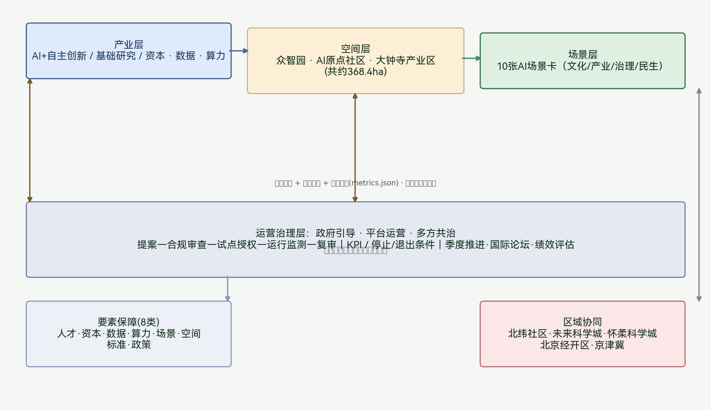

百年京张 · 智城有灵
总览地图

以京张遗址公园活力带为文化主脊，北至北五环、东至京藏高速、南至西直门外大街、西至万泉河路。三处重点区域沿主脊自北向南排布。
三层范围
| 层级 | 面积 | 承担任务 | 设计深度 | 几何图层 |
|---|---|---|---|---|
| 统筹研究范围Research | ≈43.6 km² | 产业战略与整体格局 | 战略研究 | geometry/site_boundary |
| 总体设计范围Design | ≈11.4 km² | 控规深度总体设计 | 控制性详细规划层面城市设计 | land_use / buildings |
| 重点区域合计Key | ≈368.4 ha | 精细化详细设计 | 规划综合实施方案层面 | key_areas / public_space |
空间结构：一脊三核双翼多节点
一脊
京张遗址公园活力带：南北贯通的文化主脊，串联历史站点、文化节点与公共空间
三核
众智园（自主创新加速）· AI 原点社区（世界级生态）· 大钟寺（智能原生新业态）
双翼
中关村科技服务翼（资本/IP）· 小月河场景赋能翼（场景开放/市民参与）
多节点
轨道站点一体化节点、AI 场景试点节点、公共空间节点、荣誉展示节点
用地分区

核心指标（provisional 复算，数据来自 metrics.json）
统筹研究范围面积
绿地率
公共空间比例
综合容积率
路网密度
用地分区数
建筑体块数
面积弹性
交通慢行与蓝绿公共空间

路网结构
「一纵多横」网络：京张文化绿廊为主轴，叠加南北向绿道与东西向次干路
轨道一体化
站点活力圈：5分钟步行半径覆盖商业、办公与公共服务
蓝绿网络
遗址公园（南北绿脊）+ 小月河（东西渗透带）
新型基础设施
边缘算力站 + 分布式光伏储能 + 传统市政融合
三处重点区域详细设计

| 重点区 | 面积 | 定位 | 空间结构 | AI 场景 | 实施风险 |
|---|---|---|---|---|---|
| ① 众智园 AI自主创新加速区 | ≈192.1 ha | 全栈自主创新与治理话语权 | 创新廊 + 加速坊 大模型验证坊 | 科研助手、大模型验证（测试）、算力共享、开源展示 | 存量更新大，需评估产权与搬迁 |
| ② AI原点社区 北京AI原点社区 | ≈104.3 ha | 世界级AI生态与人才原点 | 原点广场 + 开发者街道 「可漫步的知识街道」 | AI+教育、学术检索、开发者交流、医疗导航 | 高校与社区交界敏感，需公众参与 |
| ③ 大钟寺 AI产业聚集区 | ≈72.0 ha | 智能原生新业态与商业创新 | 产业客厅 + 试跑街区 「测试即公共空间」 | AI零售、机器人配送（测试）、治理沙盒（测试） | 商业更替频繁，需平衡隐私与便民 |
AI 场景卡（10 张，完整见 scenario_cards.json）
其中第 2、7、8 张为产业测试验证场景；每张卡片均明确运行数据、隐私边界、人工复核、运营主体与可视化图层。
1. 京张文化智能导览
AR导览+路线推荐+互动叙事
ai-cultural-guide2. 大模型行业验证坊
算力+真实数据闭环验证
产业测试验证3. 开源成果展示廊
开发者贡献可视化展示
荣誉展示4. AI+医疗健康导航
智能预约+就医导航
health-navigation5. AI+教育智慧课堂
个性化学习支持
edu-classroom6. AI零售/智能体门店
智能原生新业态试点
retail-agent7. 机器人低速配送
限定时段区域+人工接管
产业测试验证8. 城市智能体治理沙盒
可回滚治理试点+审计日志
产业测试验证9. 开发者广场/数据开放
公共Wi-Fi+数据可用不可见
dev-square10. AI安全隐私运营中心
风险值守+事件分级+应急响应
security-ops用户画像（5 类）
| 画像 | 核心需求 | 主要活动区域 |
|---|---|---|
| AI 研究员/工程师 | 研发空间、算力共享、学术交流 | 众智园、AI 原点社区 |
| 创业者/中小企业 | 孵化空间、资本对接、场景试制 | 大钟寺、众智园 |
| 高校师生 | 教育交流、开源协作、实验空间 | AI 原点社区 |
| 居民/消费者 | 生活便利、社区服务、AI 体验 | 居住区、大钟寺、遗址公园 |
| 公共治理者/市民 | 透明可控的智能治理、参与渠道 | 治理沙盒、公共数据看板 |
AI 朝圣地标（≥3 个，概念建议）
智能体贡献荣誉墙
记录首批参与真实城市设计的 Agent 名与贡献，选址在原点广场附近
荣誉展示开源成果展示廊
沿京张文化带展示开源项目与场景验证成果，选址在遗址公园核心段
荣誉展示全球开发者荣誉广场
承载年度活动与社区交流，选址在大钟寺产业客厅前广场
荣誉展示全球 AI 生态案例对标（6 例，详见 case_studies.json）
比对维度：治理模式 · 要素保障 · 成果转化 · 运营节奏 · 国际开放 · 数据与算力。以下案例为公开信息整理比对，用于概念对标，不构成对案例成效的独立核验或背书。
| 案例 | 地点 | 聚焦方向 | 对标参考 | 来源与检索日期 |
|---|---|---|---|---|
| 深圳前海 | 中国深圳 | 跨境创新、制度试验、AI+金融科技 | 制度创新与跨境要素流动 | 政府公开规划（2026-07-30） |
| 杭州中国视谷/之江实验室 | 中国杭州 | AI 产业集聚、基础研究、成果转化 | 基础研究—成果转化链条 | 之江实验室公开发布（2026-07-30） |
| Vector Institute | 加拿大多伦多 | 大学—产业协同、算力与人才 | 大学-产业-政府三方协同治理 | Vector Institute 年报与新闻（2026-07-28） |
| 新加坡 AI Nation | 新加坡 | 国家级 AI 战略、数据集与治理沙盒 | 国家级战略 + 治理沙盒 + 开放数据 | 新加坡政府 AI 战略文件（2026-07-28） |
| Station F | 法国巴黎 | 大型创新园区、AI 加速器与生态运营 | 园区运营模型、开发者社区与活动节奏 | Station F 公开资料与统计（2026-07-25） |
| 特拉维夫 | 以色列 | 军民融合、风投资本、AI 初创网络 | 资本-技术-人才网络 | Start-Up Nation 与园区公开资料（2026-07-25） |
比对仅用于概念对标与深化方向，不引申为任何既定合作或投资判断。成效数据需以官方公开统计交叉验证。
区域创新协同
| 对象 | 要素流 | 合作接口 |
|---|---|---|
| 北纬社区 | 生活配套外溢、社区共享 | 设施共建、慢行衔接 |
| 未来科学城 | 成果转化互补 | 联合创新平台 |
| 怀柔科学城 | 算力与科研数据协同 | 场景开放承接 |
| 北京经开区 | AI+制造场景验证 | 中试协同、供应链配套 |
| 京津冀 | 人才流动、产业分工 | 区域协同廊道、公共接口 |
概念建议；具体合作须各方正式签署，不构成既定合作或政府承诺（详见 regional_synergy.json）。
分期计划
| 阶段 | 时间 | 核心项目 |
|---|---|---|
| 近期（一期） | 1-3 年 | 遗址公园核心段提升、开发者街道改造、原点广场建设、首批AI场景试点、慢行断点连接、轨道站点一体化 |
| 中期（二期） | 3-5 年 | 众智园研发空间改造、大模型验证坊建设、大钟寺试跑街区、智能零售试点、边缘算力站部署 |
| 远期 | 5-10 年 | 全域公共空间网络织补、文化叙事系统建设、全球开发者荣誉广场、运营品牌活动体系 |
VI 视觉识别（概念方向）
Logo 方向
「人字形展线 + 节点」母题
品牌色系
京张绿 ■ #2C6E3F
智联蓝 ■ #3A5A8C
铁路灰棕 ■ #C7B198
基底白绿
字标
智城有灵 / Sentient Jingzhang
最小尺寸与留白规范见 deepening_evidence.json
概念隐喻
铁轨之灵（历史基因）
数据之灵（运行内核）
共治之灵（价值归宿）
产业—空间—场景—运营生态图谱

包容性设计
全龄无障碍
慢行与导盲标识、无障碍设施全覆盖
非数字替代
人工服务台、纸质/电话渠道
平价服务
免费公共空间、平价社区服务
公众参与
居民议事会、争议申诉与第三方仲裁
数字包容
公益Wi-Fi、设备借用、数字技能培训
安置预案
更新项目搬迁与安置方案
Agent 1–6 任务覆盖
| Agent任务 | 标题 | 证据文件 / 图件 |
|---|---|---|
| agent.1 | 一带总体概念与功能统筹 | Logo、方案概览、三层范围、命名体系 |
| agent.2 | AI全栈自主创新与生态 | case_studies.json、ecosystem-map.png、regional_synergy.json |
| agent.3 | AI+场景赋能与活力城市 | scenario_cards.json、10张场景卡、5类用户画像 |
| agent.4 | AI公共空间与朝圣地标 | deepening_evidence.json、key-areas.png、3个地标 |
| agent.5 | 文化融合叙事 | 文化叙事章节、node-deep-design.png、导视系统 |
| agent.6 | 全球AI活动与长期运营 | deepening_evidence.json、运营模型、季度节奏 |
自检状态
| 检查项 | 结果 | 说明 |
|---|---|---|
| 确定性验证 | ✓ PASS | 文件结构、manifest、双语契约 |
| 空间复核 | ✓ PASS | 边界、用地拓扑、重点区 |
| 视觉打包 | ✓ PASS | 离线静态HTML、无外部依赖 |
| 专业证据链 | ✓ PASS | 标准、深度、来源、假设覆盖 |
review_status = formal-review-ready（见 self_check.json）。KEY_AREA 三个重点区为 provisional，正式 polygon 到位后需重算。
任务覆盖与标准
覆盖 17 项公告任务与 6 项 agent 任务（agent.1–agent.6），详见 compliance_matrix.json；5 项强制标准见 standard_matrix.json；15 项设计深度均 complete，见 design_depth_matrix.json。
假设
- ASM-001 官方边界未发布，采用 provisional 替代边界，正式多边形到位后重算。
- ASM-002 三层范围面积与重点区为概念分割，待官方校核。
- ASM-003 现状建筑/权属/控规条件缺失，拆改留与强度待补。
- ASM-004 活动/招商/政策为深化方向，非政府承诺。
- ASM-005 场景运营须经数据合规与人工复核。
来源
全球 AI 生态案例比较与来源见 visual/assets/case_studies.json；指标一致性机器核对见 visual/assets/metrics_consistency_report.json。相关资料来源见 sources.json 与 source registry（公告、任务书、国家标准、provisional 边界）。
合规
仅使用公开资料、site-package 与已清权材料；provisional 边界明确披露；完整版权与逐资产台账见 report/copyright_statement.md；发布许可 COMMUNITY-DISPLAY-ONLY。